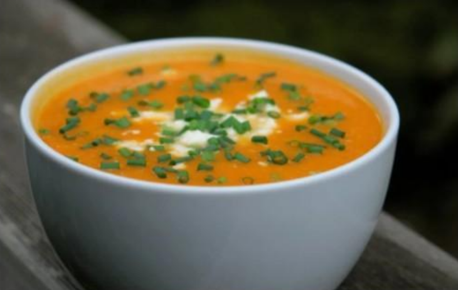

Sopa crema de Calabaza

Ingredientes:
-1 calabaza-2 rodajas de jengibre
-1 cda de leche de coco
-1 cda de curry
-un puñado de cilantro
-sal y pimienta
Preparacion
1-Con nuestra calabaza cortada, vamos a poner una olla o sartén al fuego con aceite de oliva y allí vamos meter nuestros cubitos de calabaza junto con la cebolla picada.
2- Lo que sigue es condimentar, en este caso: Sal y pimienta.
3- Una vez que los ingredientes hayan estado un ratito salteándose, vamos a disolver un caldo en una taza con algua caliente y a echarla en la olla. Así dejamos los ingredientes al fuego hasta que la calabaza esté bien cocida.
4- Lo siguiente es retirar del fuego y con una minipimer, triturar todo hasta que esté bien unificado.
5- Finalmente, vamos a echar un buen chorro de crema de leche en nuestra preparación.
6- Para servir, vamos a colocar en el cuenco, unos pedacitos de queso fresco (o el que deseen) y luego echar por encima la sopa.